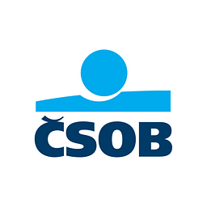

01
ALIGN & FRAME
Ujasnit problém
- Refinement zadání a scope
- Sladění stakeholderů
- Klient × business × feasibility
- Společná kritéria úspěchu
- Strategický záměr > Product Discovery Brief

ČSOBDOMINIK HLAVÁČEK
Nákup ojetého auta
Od první úvahy k informovanému rozhodnutí.
Od pochopení problému k prvnímu ověření
Ujasnit problém
Otevřít možnosti • Divergence
Vybrat směr • Vědět kde jsou mantinely
Navrhnout možnosti
Ověřit a učit se
Hlavní sdělení: Nezačínám funkcionalitou. Nejdříve potřebuji pochopit, jaké jsou hranice zadání a sladit se na konrétních cílech. Co znamená úspěch pro klienta, pro banku a pro její partnery.
AI transparentně: Poskytl jsem jí kontext zadání, role i svého profilu. Použil ji pro rešerši, další úhly pohledu a oponenturu. AI nenahrazuje reálné zákaznické poznatky ani týmovou spolupráci.
Poznámka: Předložené archetypy, journey i koncepty jsou pracovní hypotézy. Nejsou to výsledky skutečného výzkumu.
Různé situace a zkušenosti. Podobná potřeba rozhodnout se správně.
Co potřebuji prakticky vyřešit?
Jak se chci během nákupu cítit?
Jak chci působit na své okolí?
Dvě nezávislé dimenze: Jeden z příkladů, jak se dostat pod kůži klientům a pochopit jejich chování: Jobs-to-be-done a archetypy.
Pomáhá nám lépe definovat potřeby, painpointy nebo bariéry v zákaznické cestě. JTBD a archetypy se mohou navzájem doplňovat. Člověk kupující své druhé nebo třetí vozidlo může být stále nejistý nováček, jelikož za něj koupi v minulosti řešil někdo v rodině apod.
Jedná se o model pro první výzkumné rozhovory, nikoli o výsledky empirické segmentace.
Zaměřit se na začátek rozhodování. Rozumět ale celé nákupní cestě.
„Potřebuji nové auto?“
„Co potřebuji a kolik?“
„Které auto vybrat?“
„Je to dobrá koupě?“
„Jak vše dokončit?“
Hlavní myšlenka: Rozumím celé cestě, ale těžištěm řešení je její první část, kde banka typicky přichází pozdě. Na slidu proto vidíme high level ukázku z této části cesty.
Na předchozím slidu jsem ukázal, že lidé řeší různé úkoly a rozhodují se různě. Tyto poznatky bych následně promítl do zákaznických cest. Tady ukazuji pouze jejich high-level syntézu. Reálně bych pracoval s různými situacemi a archetypy, hledal společné bariéry a prioritizoval příležitosti společně s týmem.
Do čeho nevstupovat: univerzální inzertní portál a vlastní síť technických inspekcí. Hodnotu mají specialisté a partneři. Moje garáž pro následný provoz je až budoucí vize, nikoli v rozsahu současné case study.
Nezáleží na jedné aplikaci. Záleží na jedné navazující klientské cestě.
Kolik mě bude ojeté auto reálně stát?
Od první úvahy k informované koupi.
Dlouhodobá relevance nad rámec nákupu.
Obecně: Přesná podoba konceptů a jejich features nám dá až výzkum a jejich následný refinement na konkrétních workshopech. Následující výčet je tedy pouze popis konceptů k ověření.
A = Kalkulačka: Jednoduchý veřejně dostupný webový nástroj, který pomůže zorientovat se v reálných nákladech na ojeté auto. Základní formulář rychle odhadne provoz a pořizovací náklady, pokročilý doplní servis, pojištění nebo financování. Výsledkem jsou doporučené další kroky a checklist, s možností pokračovat do Průvodce nákupem. Klient získává hodnotu i bez přihlášení; uložení plánu nebo předání kontaktu je dobrovolné. Kanál, včetně DoKapsy či ČSOB Smart, je zatím hypotéza k ověření.
B = Průvodce: Průvodce nákupem ojetého vozu. Klient získá checklist, rozpočet, doporučené kroky, možnost uložit si odkazy na vyhlédnutá auta, porovnávat je a využít prověření. ČSOB rozpozná potřebu dříve a může nabídnout relevantní produkty i auta po operativním leasingu.
Jedna cesta, nikoli jedna appka: Zatím je brzy určit, který kanál a na co je nejvhodnější. Veřejný web je vhodný pro dohledatelnost přes vyhledávání a AI odpovědi (SEO/GEO) i pro neklienty. DoKapsy může být kontextový ekosystémový vstup a místo návratů. ČSOB Smart může nabídnout bankovní . Konkrétní roli kanálů ověřit daty a technickými možnostmi. ČSOB už uvádí přechody mezi DoKapsy a Smart a ČSOB ID, ale sdílený nákupní plán je teprve návrh.
Sauto / externí portály: V MVP stačí vložit odkaz na inzerát. Klient si vytvoří vlastní shortlist bez nutnosti provozovat další autobazar. Případná funkce „Sdílet“ může snížit počet kroků, ale závisí na technickém řešení. Automatická synchronizace oblíbených aut a partnerská integrace - pokud existuje vhodné API, obchodní dohoda a souhlas klienta.
ČSOB Leasing: Do shortlistu patří relevantní vozy z ČSOB Leasing vedle vozů od ostatních prodejců.
Proč sdílet informace? Za vyplnění krátkého průvodce musí klient získat hodnotu, například nákupní plán či rozpočet. Rozlišit nezbytné údaje, volitelné uložení a marketingové souhlasy. Klient může auto koupit kdekoli a nadále dostat pomoc.
C = Budoucí vize: Moje garáž inspirovaná Lloyds My Car. Staví na mobilitních službách DoKapsy, termínech STK, servisu, pojištění a jednoduchých údajích. V budoucnu může vytvořit kontext další obměny auta, ale následný provoz je mimo zadání. Proto ji nyní neupřednostňuji.
Technické otázky: Identita a oprávnění, sdílený datový model plánu, deeplinky, ochrana dat, analytika napříč kanály a kvalitní předávání partnerům. První test bez plné integrace.
Nejdřív pochopit potřebu, potom ověřit koncepty a rozhodnout, co dál.
8–12 klientů · skutečné JTBD, bariéry a spouštěče nákupu
Porozumění nákladům, použitelnost, důvěra a další kroky
Reálný zájem, dokončení a ochota pokračovat
Klienti chtějí pomoc ještě před výběrem auta.
Klienti dobrovolně sdělí potřebu výměnou za užitečný plán.
Shortlist a prověření pomáhají udělat lepší rozhodnutí.
Klienti důvěřují, že jim banka může pomoci i s nákupem auta.
Hlavní sdělení: V předchozích slidech jsem ukázal způsob práce od framingu přes Jobs to Be Done a archetypy, high-level zákaznickou cestu až ke třem návrhům. Nejde o hotová řešení ani výsledky uskutečněného výzkumu. Teď potřebuji ověřit, zda jsme identifikovali správnou potřebu, zda koncepty přinášejí hodnotu klientovi a zda mají potenciál pro ČSOB. Teprve na tomto základě má smysl rozhodovat o investici a konkrétní podobě služby.
Nejprve discovery: Začal bych kvalitativními hloubkovými rozhovory, pracovně s 8–12 lidmi v různých fázích nákupu a s různou zkušeností. Nejdříve bych zkoumal skutečně prožité situace, jejich spouštěče, rozhodování, JTBD, nejistoty a to, komu lidé v nákupu důvěřují. Nezačínal bych otázkou „Líbila by se vám bankovní kalkulačka?“, protože ta může odpovědi zkreslit. Archetypy ze slidu 2 a journey ze slidu 3 bych bral jako pracovní hypotézy, které se mohou potvrdit, změnit nebo úplně zaniknout. Výběr respondentů doplnit o stávající klienty i neklienty; rozhovory nejsou statisticky reprezentativní průzkum.
Pak rychlé testy řešení: Na základě zjištění připravit jednoduchý klikatelný prototyp kalkulačky (koncept A) a vybraných kroků průvodce (koncept B). Nechat lidi vykonat konkrétní úkol: zjistit reálné náklady na auto, pochopit výsledek, rozhodnout o dalším kroku, případně si uložit plán či porovnat vybrané vozy. Sledovat srozumitelnost výstupu, užitečnost, úsilí, pocity jistoty a důvěry, nikoli pouze deklarované „líbí/nelíbí“.
Následně ověřit chování: Otestovat zájem o užitečný výstup přes transparentní fake door nebo jednoduchou funkční verzi kalkulačky. Měřit dokončení výpočtu, dobrovolné uložení, návrat a další smysluplný krok. Uživateli musí být jasné, co je funkční a co se teprve připravuje.
Jak s metrikami pracovat: Před pilotem vymezit výchozí stav a kohorty, stanovit definici úspěšného kroku a vhodné časové okno. Cílové hodnoty bych nenastavoval bez dat. Pro zhodnocení obchodního dopadu je vhodné, kde to půjde, srovnání s kontrolní skupinou.
Syntéza a rozhodnutí: Výstupy rozhovorů a testů společně s týmem vyhodnotit, prioritizovat podle klientské hodnoty, business přínosu, proveditelnosti a nákladů. Podle zjištění můžeme pokračovat s kalkulačkou, rozvinout průvodce, změnit směr nebo koncept zastavit. Moje garáž (koncept C) je vědomě mimo současný scope nákupu; může být podnětem pro širší ekosystém, ne prioritou této case study.
Refinement a sladění: Pokud se hodnota potvrdí, zapojit produktové týmy, UX/design, IT a architekturu, analytiku, právní a compliance kolegy i relevantní partnery. Dopřesnit datové potřeby, kanál, souhlasy, předání mezi službami, obchodní model a mantinely MVP. Nevytvářet integrace dříve, než pro ně existuje důkaz hodnoty.
Druhé ověření konkrétnějšího řešení: Připravit propracovanější prototyp nebo úzké MVP a znovu validovat konkrétní end-to-end scénáře, použitelnost, důvěru, ochotu pokračovat a technicko-obchodní proveditelnost. Jde o iterativní proces ze slidu 1: podle poznatků můžeme upravit řešení, priority, nebo se dokonce vrátit ke strategickému framingu.
Nákupní zájem: Podíl klientů s deklarovaným nákupním záměrem, kteří ve vhodném časovém okně udělají ověřitelný smysluplný krok k informované koupi. Například si sestaví realistický rozpočet, vyberou a porovnají kandidáta nebo dokončí prověření. Časové okno je potřeba stanovit podle délky nákupního procesu, nikoli odhadnout od stolu. Pouhé kliknutí nebo předání leadu nestačí.
Guardrails: transparentní práce s údaji a souhlasy, vhodnost nabídky, ochrana klienta před finančním přetížením, nestrannost doporučení, kvalita partnerské služby a důvěra v banku.
Nakonec: Cílem není přidat další produkt do nabídky. Chci, aby banka dokázala být užitečná dříve, pomohla klientovi lépe se rozhodovat a teprve v relevantní chvíli přirozeně nabídla svoje služby a služby partnerů. O tom, co skutečně postavíme, rozhodnou klientské poznatky, tým a ověření.